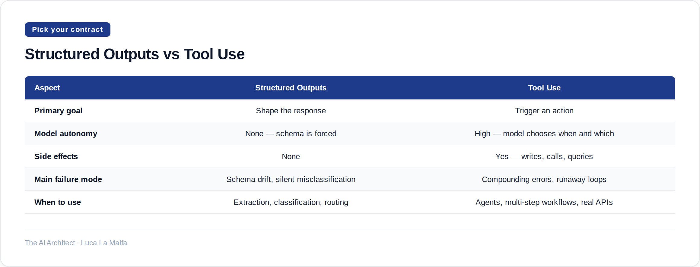

Two ways to make LLMs behave predictably — they solve different problems and mixing them up costs you.
November 5, 2026
Here is a distinction that gets collapsed in almost every 'intro to agentic AI' talk: structured outputs and tool use are not the same thing, and treating them as interchangeable will cause you real pain in production. Structured outputs is a contract about shape — you tell the model to return JSON that conforms to a schema, and you get back data you can parse without writing defensive string-munging code. Tool use is a contract about action — the model decides to invoke a capability, passes arguments, and something actually happens in the world. One is about representation. The other is about side effects.
The confusion is understandable. Both involve schemas. Both feel like 'getting the model to behave.' But if you reach for tool use when you just need structured data extraction, you're adding a round-trip and a layer of indirection that serves no one. And if you reach for structured outputs when you actually need the model to call an API or run a query, you're going to end up writing a parser that reads the model's 'output' and manually dispatches to functions — which is just tool use with extra steps and none of the framework support.
Option A
anthropics/claude-cookbooks — Tool-use and structured-output recipes (calculators, SQL, customer service agents).
Notice what happened there: a tool schema was used, but tool_choice is forced — the model has no decision to make. That's structured output dressed in tool clothing. It works well on Anthropic's API because Claude doesn't have a native 'respond with JSON schema' parameter the way OpenAI does, so you force a single tool call and read input off the result. The model never 'decides' to call anything; the schema is just the shape enforcer. This is fine, and it's often the right call for classification, extraction, and routing tasks. The moment you let the model choose which tool to call, and when, you've crossed into genuine tool use — and that's a different design problem entirely.
Real tool use means the model is an agent making decisions: it sees a set of capabilities, reasons about which ones apply, calls them in sequence, incorporates results, and eventually produces a final answer. The failure modes are different too. With structured outputs the risk is schema drift — your schema doesn't match reality anymore and extractions silently go wrong. With tool use the risks are compounding errors across steps, tools being called in the wrong order, and runaway loops if you don't put hard limits on iterations. Neither approach is inherently safer. They're just dangerous in different ways.

Option B
modelcontextprotocol/servers — Reference MCP server implementations that expose tools to LLMs.
Inspired by llm 0.37 (Simon Willison)